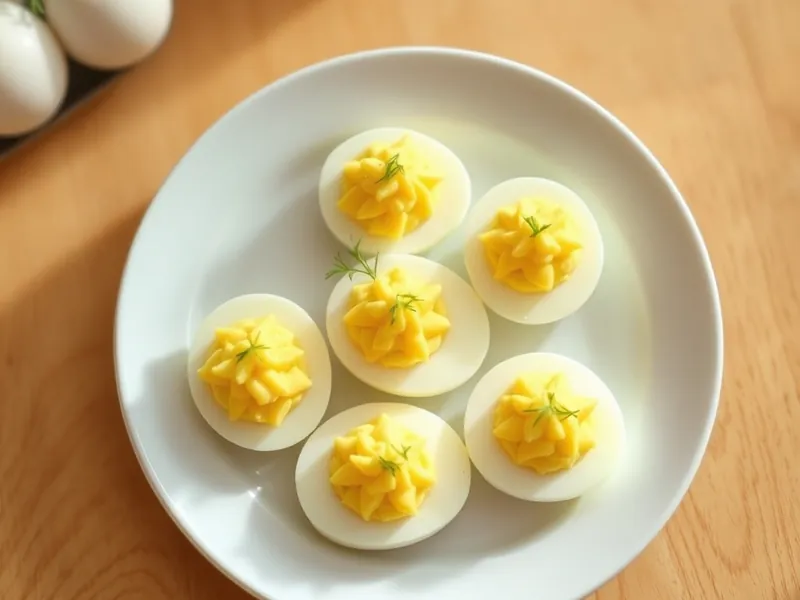

Яйца, фаршированные сыром и чесноком
Половинки варёных яиц с начинкой из желтков, тёртого сыра, чеснока и майонеза
25 мин4 порц.254 ккал на порциюБ 15 · Ж 21 · У 1Русская кухня
Открыть в приложении: порции, таймеры, список покупок
Продукты на 4 порц.
- Яйцо куриное6 шт
- Сыр твёрдый60 г
- Чеснок1 зуб.
- Майонез2 ст. л.
- Соль1 щеп.
- Укроп по желаниюпо вкусу
Как готовить
- Опустите яйца в кипящую воду и варите на среднем огне 10 минут, затем переложите в холодную воду на 5 минут.
- Очистите яйца, разрежьте вдоль пополам и аккуратно выньте желтки.
- Разомните желтки вилкой, натрите к ним сыр на мелкой тёрке и выдавите чеснок.
- Добавьте майонез и щепотку соли, перемешайте до однородной пасты, которая держит форму.
- Наполните белки начинкой горкой с помощью чайной ложки или кондитерского мешка.
- Украсьте веточками укропа и уберите в холодильник на 5 минут перед подачей.
Совет. Чтобы желток был в центре и белок не порвался, берите яйца не самые свежие, а пролежавшие 3-5 дней, и чистите их сразу после холодной воды.